Menú File
Dentro de la aplicación se encuentra la sección del menú File donde se tienen las funciones más importantes del sistema: Entries, Applications, Application Groups, Components, Environments, Categories, Disconnect y Exit.
Applications
Una aplicación es un conjunto de Componentes que se encuentran dentro de un grupo de aplicación. La aplicación es donde se almacenará la configuración.
Click File > Applications
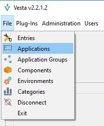
La siguiente pantalla muestra las acciones que se podrán realizar sobre una aplicación.
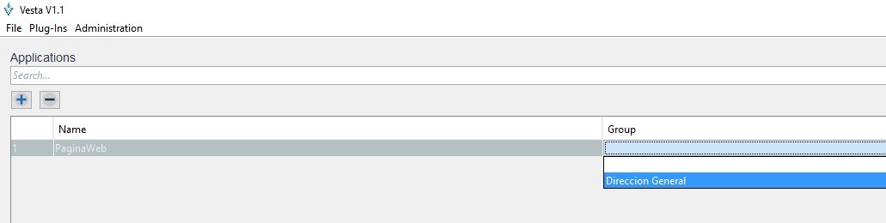
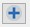 Este botón habilita un nuevo registro en modo edición, permitiendo la captura de una nueva aplicación.
 Este botón elimina la aplicación seleccionada. Confirmación por parte del usuario será solicitada
Este botón elimina la aplicación seleccionada. Confirmación por parte del usuario será solicitada
Una aplicación puede ser agrupada de manera lógica a través de un “Grupo de Aplicaciones”.
Application Groups
Un grupo de aplicaciones se usa para asignar aplicaciones a un área de la organización, por ej., la aplicación “PagosApp” y “VentasApp” se asignaría al Grupo “Finanzas”.
El grupo permitirá asociar a un conjunto de aplicaciones en un subgrupo superior permitiendo mantener una estructura organizacional definida.
Click File > Application Groups
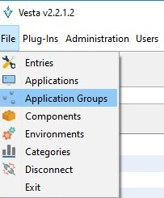
En la siguiente pantalla se podrán crear o eliminar grupos de aplicaciones, en la ventana también se visualizan todos los grupos que han sido creados.
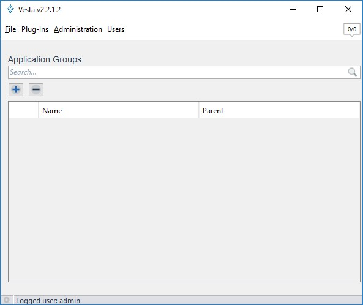
Este botón habilita un nuevo registro en modo edición; permitiendo la captura de un nuevo grupo de aplicaciones.
Este botón elimina el grupo de aplicaciones seleccionado. Confirmación por parte del usuario será solicitada.
Una vez creada una aplicación, se asigna al grupo correspondiente en la columna Parent.
Components
Un componente representa una plantilla basada en propiedades que utilizan una entrada de datos de configuración para el almacenamiento de valores.
Click File > Components
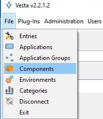
Nota: Un componente puede ser generado de manera manual, o provenir de un plug-in.
La siguiente ventana muestra las acciones que se podrán realizar sobre un componente.
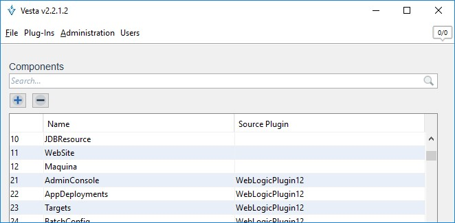
Este botón habilita un registro en modo edición, permitiendo la captura de un nuevo componente.
Este botón elimina el componente seleccionado. Confirmación por parte del usuario será solicitada.
Nota: Cuando un componente es eliminado, todas las entradas de configuración basados en el componente son eliminadas de manera automática.
Una vez creado el componente se acceder a él para agregarle sus propiedades. La siguiente pantalla muestra cómo acceder y modificar las propiedades de un componente.
Right Click > View Properties
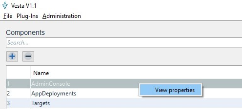
La siguiente pantalla muestran las propiedades del componente y permite agregar, modificar o eliminar de maneara manual las diferentes propiedades que conforman un componente.
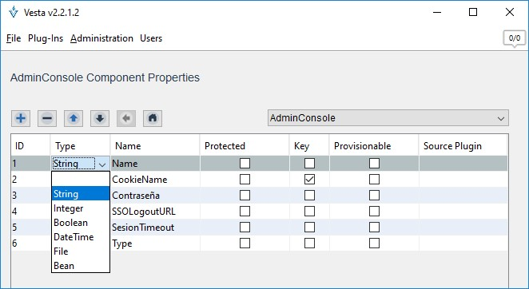
Este botón habilita un registro en modo edición, permitiendo la captura de una nueva propiedad.
Una vez que ha sido habilitado un registro se deben considerar los siguientes campos a capturar de las propiedades del componente:
-
Type (Tipo de dato): Define el tipo de dato a almacenar, se tienen seis tipos de datos, String, Integer, Boolean, DataTime, File y Bean (permite hacer referencia a otro componente)
-
Name: Es el nombre que representa el campo Protected: Define si el tipo de dato debe ser enmascarado (Password).
-
Key: Define si la propiedad será marcada como la llave primaria dentro del componente (Propiedad utilizada por el método de comparación).
Nota: Para guardar la propiedad editada será necesario presionar la tecla [Enter].
La ventana propiedades del componente contiene funciones que se describen a continuación:
Elimina la propiedad seleccionada. Confirmación por parte del usuario será solicitada
Nota: Cuando una propiedad es eliminada todas las entradas de configuración del componente son modificadas, eliminando de manera automática los valores asociados a estas propiedades dentro de la entrada de configuración.
Permite modificar el orden de visualización de la propiedad dentro del componente, desplazando la propiedad seleccionada una posición arriba.
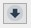 Permite modificar el orden de visualización de la propiedad dentro del componente, desplazando la propiedad seleccionada una posición abajo.
 Permite desplazarse a la edición del componente anterior, previo a la selección de un nuevo componente a través de la opción “Componente”.
Permite desplazarse a la edición del componente anterior, previo a la selección de un nuevo componente a través de la opción “Componente”.
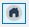 Permite desplazarse a la edición del componente original previo a la selección de un nuevo componente mediante la opción “Componente”.
La siguiente pantalla, la opción enmarcada permite elegir un nuevo componente a editar. No precisamente lleva el nombre que se muestra, ya que el nombre es de acuerdo con el componente que se tenga en su momento.

Agregar un “file” como propiedad en un componente
Esta opción permite asignar el tipo “File” para una propiedad en un componente. Este tipo permite guardar archivos y obtenerlos cada vez que se requiera. Por ejemplo, si quieres guardar un reporte de Excel tendrás que elegir el “type” como “File”. De manera que cuando creas una entrada de configuración puedas guardar un documento XLS en esa propiedad.
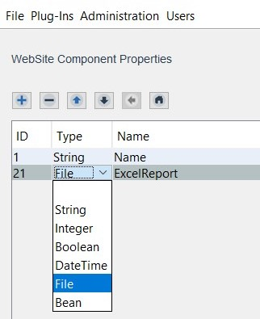
Nota: El documento se genera cuando es agrega una entrada al componente.
Environments
Un ambiente representa un entorno de trabajo de una “Aplicación”. Toda la entrada de información que sea introducida deberá ser ingresada bajo un ambiente de trabajo para diferenciar la etapa de desarrollo que se lleva a cabo.
Click File > Environments
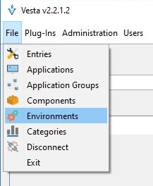
La siguiente ventana muestra los ambientes que se encuentran definidos dentro de la aplicación. Se pueden crear los ambientes que se consideren necesarios.
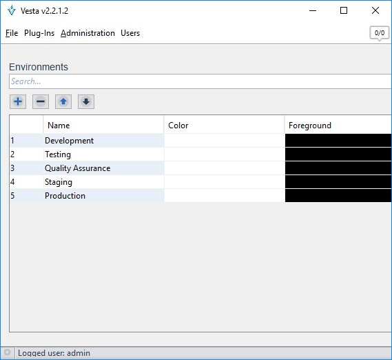
Este botón habilita un nuevo registro en modo edición, permitiendo la captura de un nuevo ambiente.
Este botón elimina el ambiente seleccionado. Confirmación por parte del usuario será solicitada.
Nota: Cuando un ambiente es eliminado, todas las entradas de configuración asociados al ambiente son eliminados de manera automática.
Categories
Una categoría tiene la función de clasificar entradas de configuración de acuerdo con la prioridad de la configuración. Agrupar varias entradas en una misma categoría facilita la búsqueda y la edición de múltiples entradas de configuración por vez. También sirve para visualizar las propiedades con códigos de colores de manera que facilite la localización de estas.
Nota: definir múltiples categorías es útil para clasificar los cambios. Un cambio de mayor importancia es identificado de manera visual a través de un color distintivo.
Click File > Categories
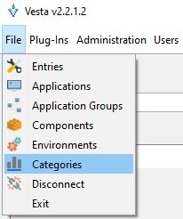
La siguiente pantalla muestra las diferentes categorías, donde se pueden agregar, eliminar o modificar las categorías
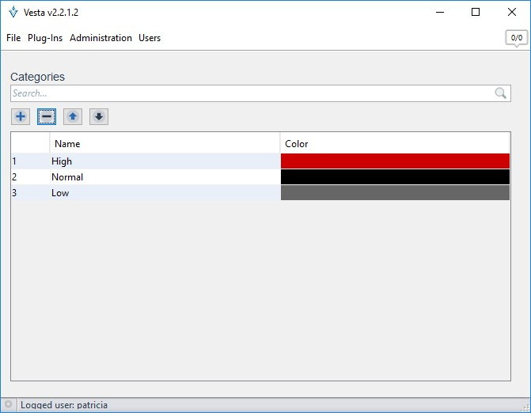
Entre las características a destacar se encuentra el color de letra que puede ser asignado a cada una de las categorías.
Este botón habilita un registro en modo edición que permite la captura de una nueva categoría
Este botón elimina la categoría seleccionada. Confirmación por parte del usuario será solicitada.
Nota: Para guardar la categoría editada será necesario presionar la tecla [Enter]
Disconnect
Esta opción permite “cerrar sesión” del usuario actual y se puede volver a ingresar con otro usuario sin necesidad de cerrar la aplicación.
Click File > Disconnect
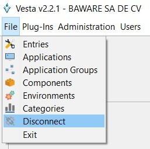
Exit
Esta opción permite detener y salir completamente de la aplicación.
Click File > Exit
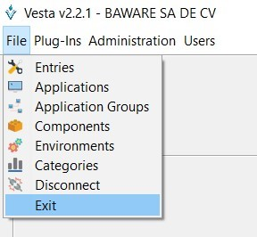
Nota: Al cerrar la aplicación desde el icono de “cerrar” la aplicación seguirá abierta en segundo plano.